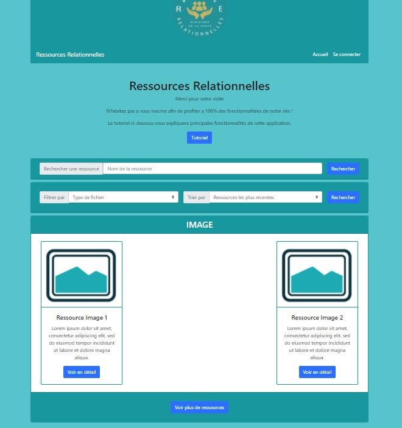
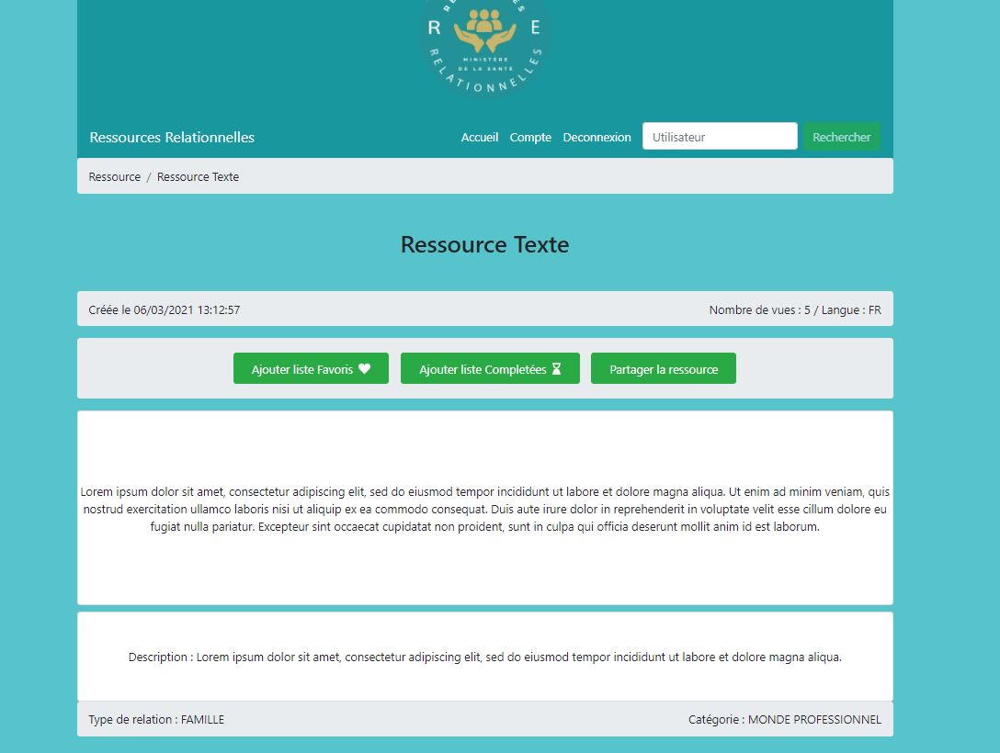
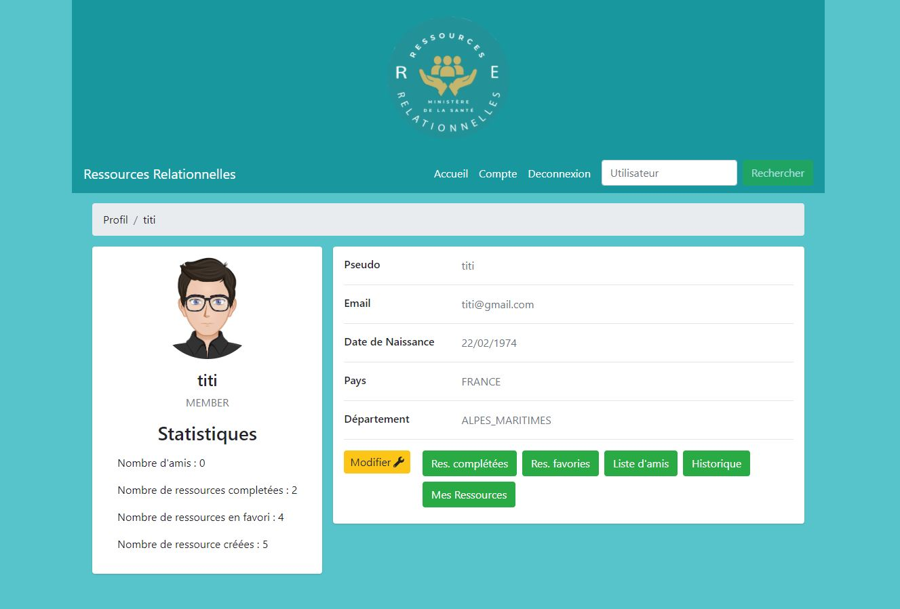

Ressources Relationnelles
Bienvenue dans cette nouvelle application qui n'attend que vous pour s'enrichir de contenus !
Découvrez ci-dessous l'ensemble de vos possibilités !

Une page d'accueil complète
Trouvez les dernières ressources postées et les plus populaires triées par catégories

Détail d'une ressource.
Retrouvez le détail d'une resource en cliquant dessus. Devenez membre pour pouvoir conserver vos ressources favories et sauver votre progression !

Rejoignez la communauté
Devenez membre pour mesurer vos statistiques de consultation, et partager ds ressources avec vos amis dans la communauté
Previous
Next